Our Mediated LivesVisual Culture, considered.
Cultureon Screens
A field guide to the images, narratives, and thoughts shaping the way we see each other in/through screens.
Expandedvisions↓ A living archive
of now and then
A note on looking — 01 / 03
The screen is
never just a screen.
A portal, a reflection, a stage. The screen confronts us, engages us, and tempts us. Culture on Screens grapples with the complexities of visual culture in the digital age.
Get to know usInterfaces>
Visualizing
other possibilities
Our point of view03 — 03

Images shape
what we know.
So let’s look twice.
Then talk about it.